The spec is docs/34, §9 and §17. mockup-notes.md lists what the drawings decided and what they showed to be awkward. The owner reviews them in RG-H2.
The node and the Reference tab, empty
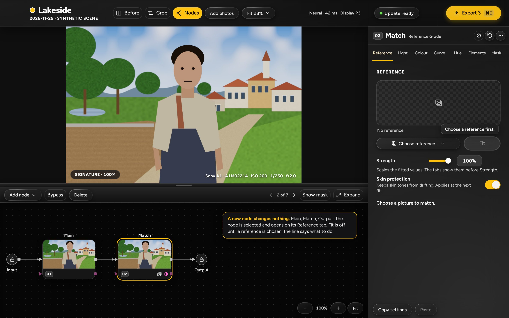
Main, Match, Output; the node selected on its Reference tab. No reference yet: the chooser, a disabled Fit with its tooltip, Strength, Skin protection, and the line “Choose a picture to match.”
- A new node changes no pixel.
- Seven tabs fit at 400 px; the row's type size is 12 px for this kind (docs/34 §9.1).
Choosing a reference: the file path
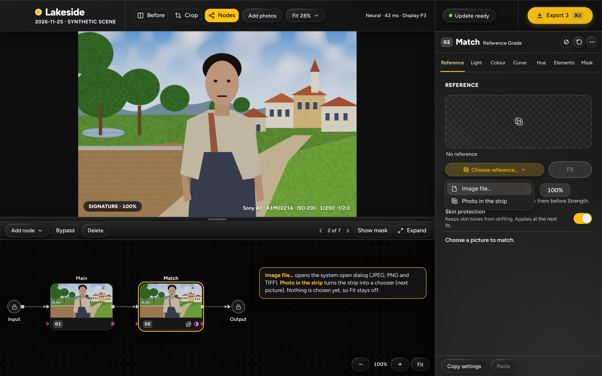
Choose reference… opens a two-item menu: Image file… (the system open dialog, which is not drawn) and Photo in the strip.
- The menu is the Add node menu's glasscn menu.
Choosing a reference: the strip
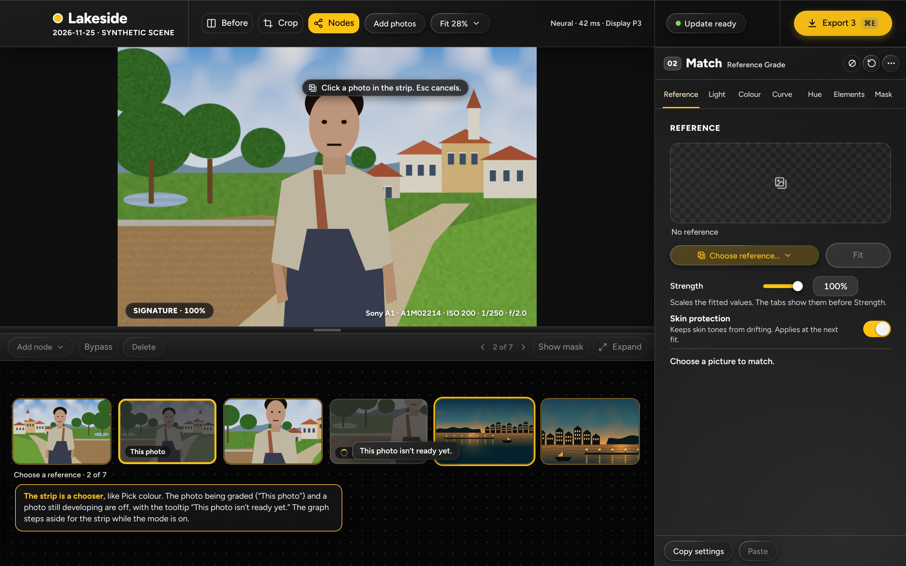
The strip turns into a chooser, like Pick colour: “Click a photo in the strip. Esc cancels.” The photo being graded and a photo still developing are off.
- The graph steps aside for the strip while the mode is on (the node view hides the strip otherwise; docs/23).
Fitting
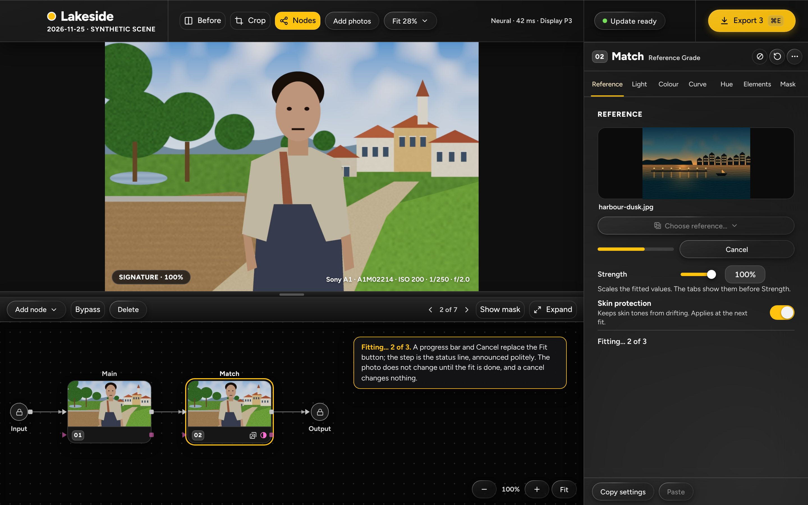
A progress bar and Cancel take the Fit button's place. The status line is the step: “Fitting… 2 of 3”. The picture does not change until the fit is done.
Fitted
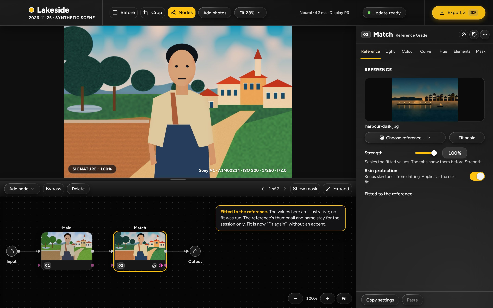
“Fitted to the reference.” The reference's thumbnail and name stay for the session. The picture shows the illustrative fit.
- The values are illustrative; no fit was run.
The Hue tab
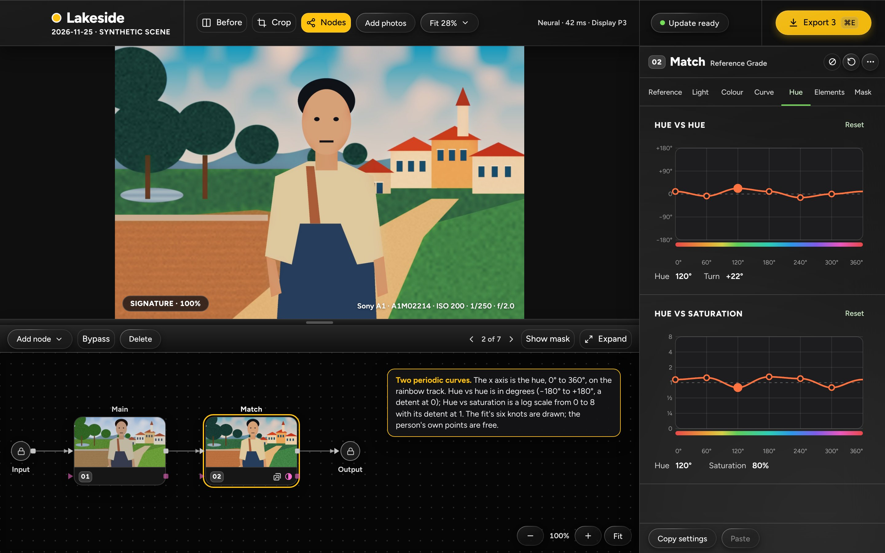
Two periodic curves on the rainbow track: Hue vs hue (degrees) and Hue vs saturation (a log scale, detent at 1), each with Reset and a readout of the selected point.
- Fitted moves of a few degrees look almost flat on the spec's full axes (±180°, 0 to 8): see mockup-notes.md.
The Elements tab
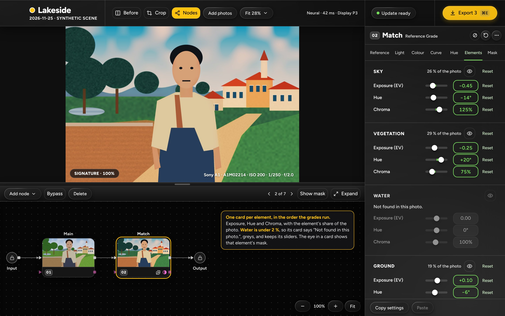
One card per element in the order the grades run: Exposure, Hue and Chroma, the element's share of the photo and an eye that shows its mask. Water is under 2 %, so its card says “Not found in this photo.” and greys.
- Hue is ± the element's cap; Chroma is a percentage of the photo's own, 50 to 160.
The Elements tab: all seven cards
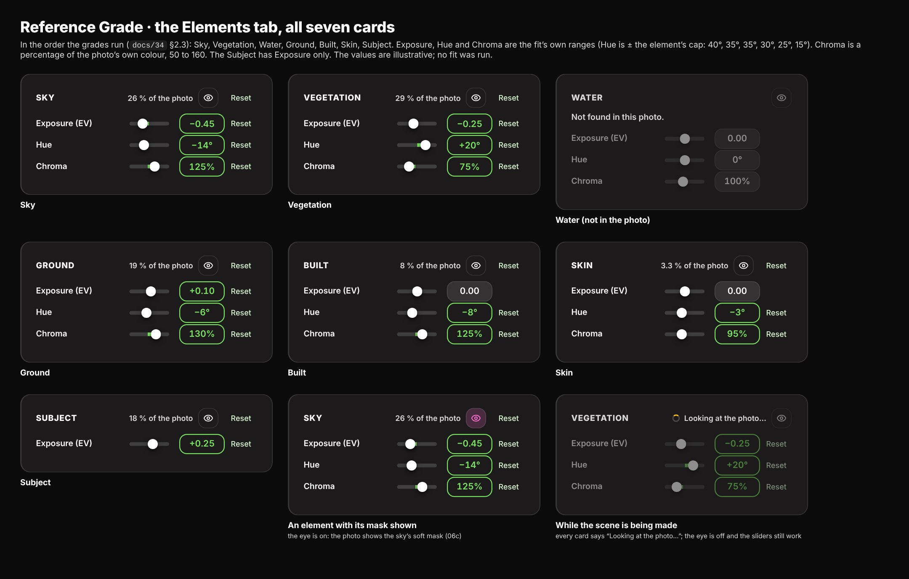
Sheet: Sky, Vegetation, Water (absent), Ground, Built, Skin and Subject, one with its mask shown and one while the scene is being made (“Looking at the photo…”).
Showing an element's mask
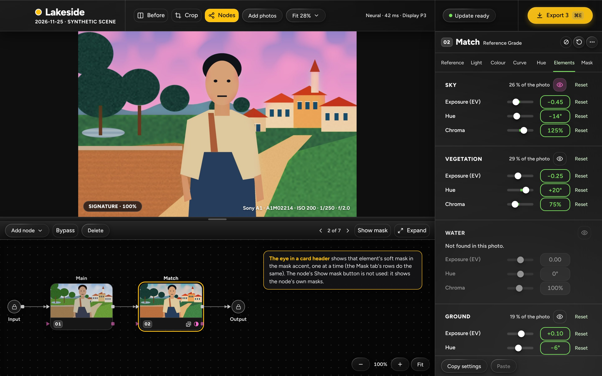
The eye in the Sky card is on: the photo shows the sky's soft mask in the mask accent.
- One eye at a time; the node's own Show mask button is not used.
The look changed since the fit
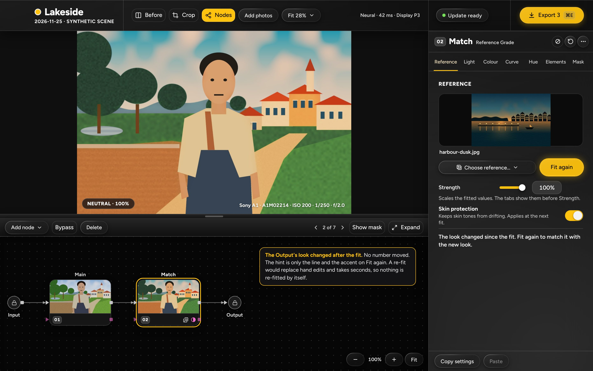
“The look changed since the fit. Fit again to match it with the new look.” Fit again carries the accent. No number moved.
Edited by hand
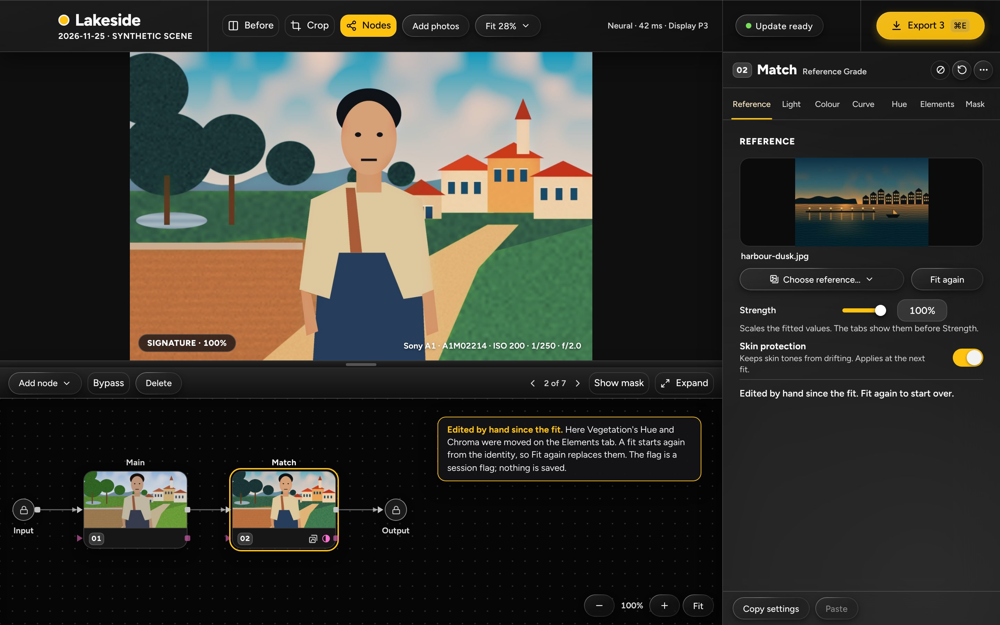
“Edited by hand since the fit. Fit again to start over.” Here Vegetation's Hue and Chroma were moved by hand.
Add node › Reference Grade
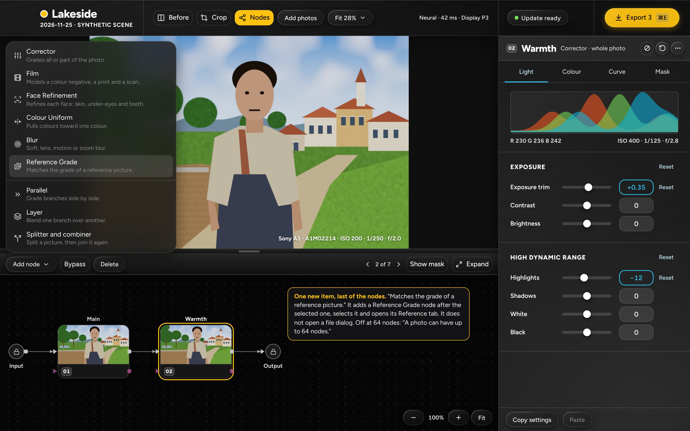
The new item, “Matches the grade of a reference picture.”
- It sits after Blur, which is after Colour Uniform (see mockup-notes.md).
The simple view
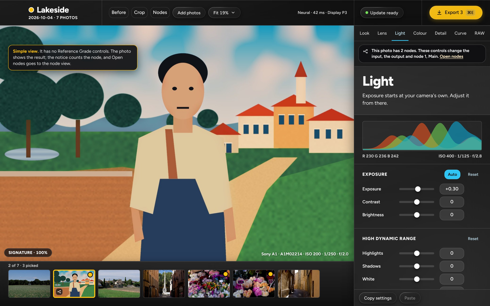
No Reference Grade controls. The notice counts the node and offers Open nodes.
Every status line, note and error
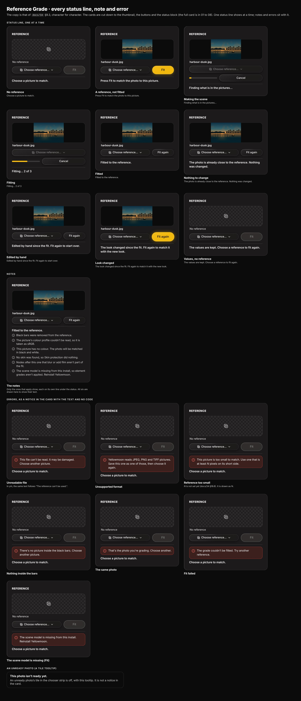
Sheet: the eleven status lines, the six notes and the seven errors of docs/34 §9.3, in the card.
- The unready-photo text is a tile tooltip, drawn in 02b.
Before and after
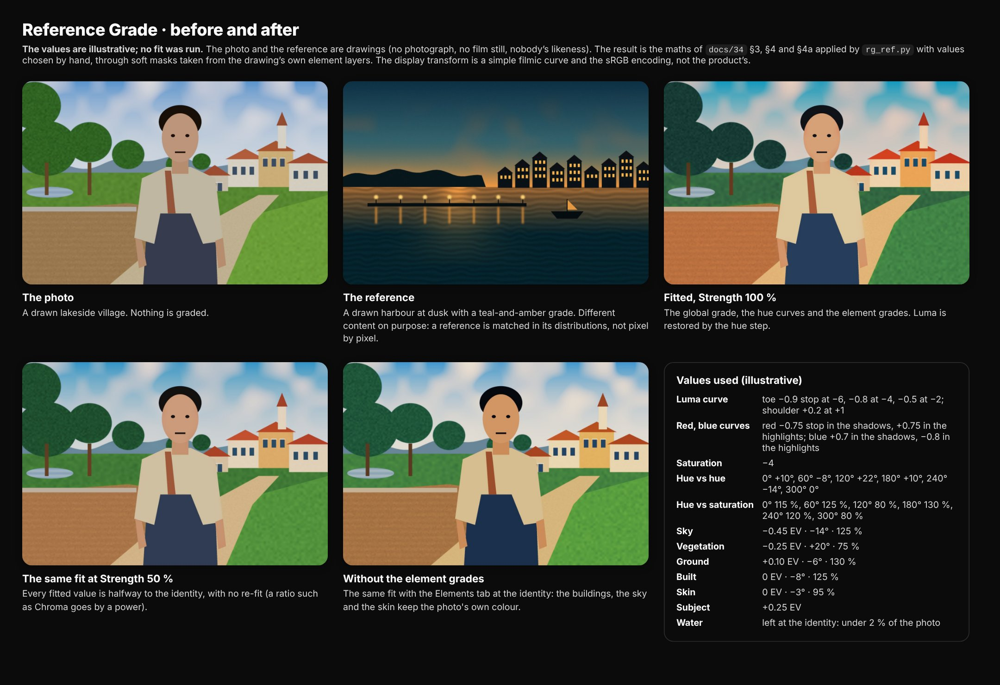
Sheet: the photo, the reference, the fitted result, the same fit at Strength 50 %, the result without the element grades, and the values used.
- The values are illustrative; no fit was run.
States
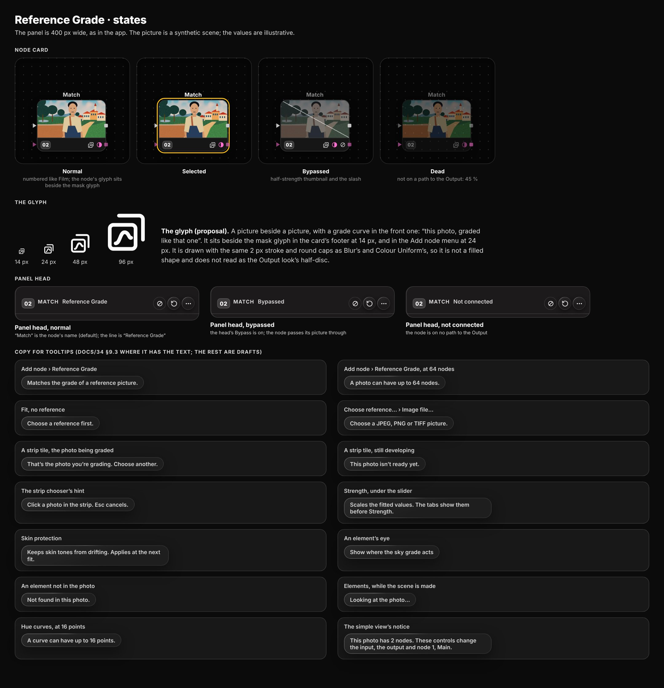
Sheet: the node card (normal, selected, bypassed, dead), the glyph proposal at four sizes, three panel heads and the tooltip copy.